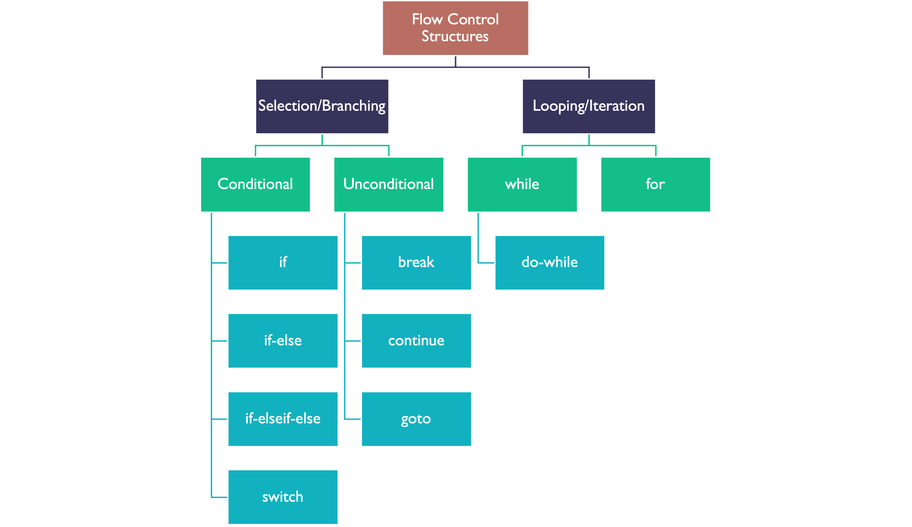
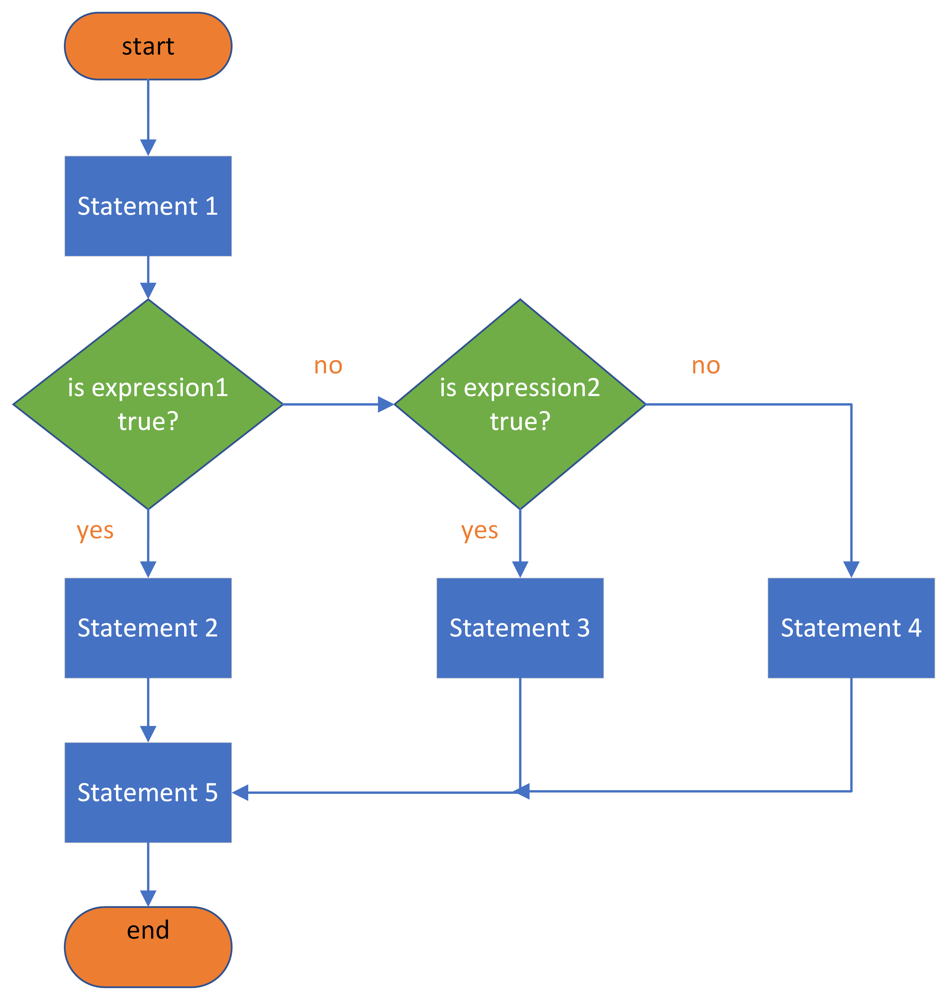
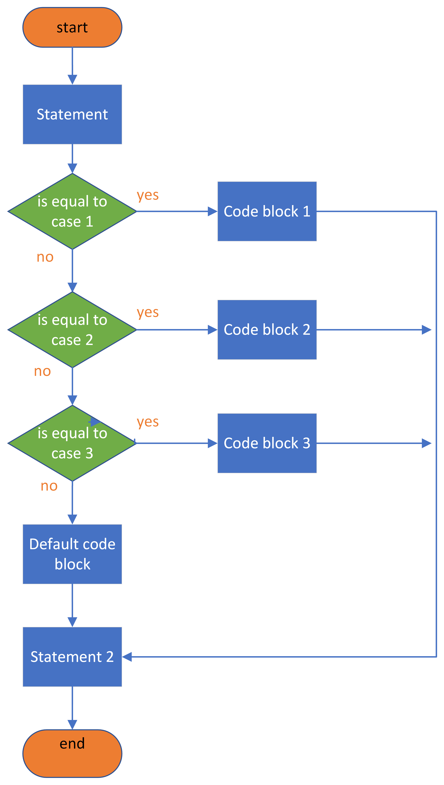
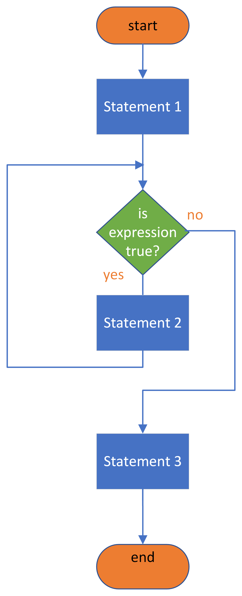
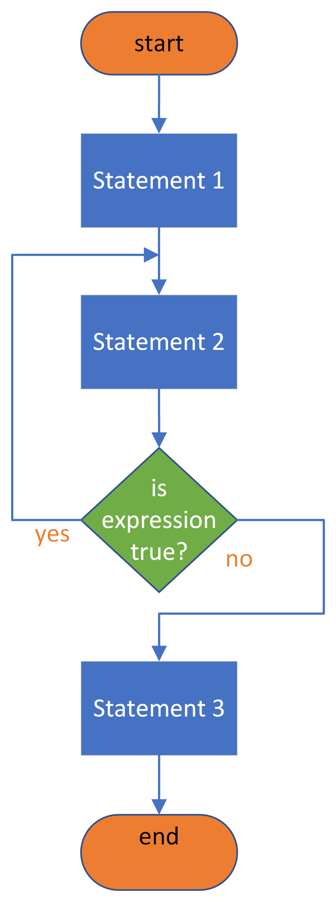

C is a high-level structured programming language which is often used for writing microcontroller applications. This weeks lecture will cover good coding practices, C language operators and how they can be grouped as well as flow control structures.
Lecture Topics
In this chapter we will be looking at how to produce clear well commented programs; data transfer, arithmetic, logic and relational operators; and flow control structures including if, switch-case, for and while.
Code Formatting, comments, pre-processor directives, statements and operators
Code formatting
Write comments that explain what the program does.
Use descriptive names for variables and functions.
Use tabs to indent nested code blocks.
Give each class/function one purpose.
Delete unnecessary/redundant code.
Readability is more important than cleverness.
Adopt and maintain a consistent coding style.
Write good comments.
Refactor, refactor, refactor.
Take regular backups and implement version control.
/* * This is a demonstration program for EG-151 microcontrollers that shows a tidy well commented program. * This program asks a user to input two numbers and uses the function findmax to determine which is the largest. * * Author: Ben Clifford * Date: 12/10/2019 */// include library files#include <stdio.h>//Required for scanf and printf// main functionint main(void){// Variable Declarationsint num1, num2, maxnum;// Function Declarationsint findmax(int,int); printf("Enter the first number: "); scanf("%u",&num1); printf("Enter the second number: "); scanf("%u",&num2);/* invoke the function findmax passing numl and num2 * as arguments and storing the result in the variable maxnum */ maxnum = findmax(num1, num2); printf("The maximum number is %u", maxnum);}// findmax Function Definitionint findmax(int x,int y){int maximum_number;if(x >= y){ maximum_number = x;}else{ maximum_number = y;}return maximum_number;}
Comments are added to code in order to make the program easier to read and understand at a later time or by another reader.
When the compiler is reading the file, the comments are ignored.
Comments must follow a set of rules and a particular format.
In the ‘C’ language comments are surrounded by /* comment */ and can span multiple lines
… or start with // if they are on a single line.
Examples of comments
Single line comment \(\rightarrow\) typically found after a statement
A =10;// This line sets variable A to 10
Multi line comment \(\rightarrow\) typically used at the start of a program or to detail a block of code or a function
/* * This comment * spans multiple lines */
Pre-processor directives
The pre-processor is part of the compilation process and runs before the code is compiled.
The pre-processor looks for lines of code beginning with a # and evaluates them before compilation.
There are also a number of predefined macros which can be called and these are surrounded by “__” characters.
The most commonly used pre-processor directives, and also the ones we will be using, are #include and #define.
The #include directive
The #include directive is used to include header files which contain declarations of existing and frequently used functions that can be substituted into your program.
/* This variant is used for system header files. The pre-processor searches for a file named in a standard list of system directories*/#include <header_file.h`>
/* This variant is used for header files of your own program. It searches for the file name first in the current directory, then in the same directories used for system header files. */#include “my_library.h”
The #define directive
The #define directive is used to define a macro – when the macro name appears in code it will be replaced with the definition stated.
Example 1: define a value for a symbol
#define pi 3.1415
Example 2: define a block of reusable code
#define cube(x)(x)*(x)*(x)
Statements in C
C functions are made up of statements, each of which is terminated with a semicolon ;.
A statement is made up of at least one operator and some operands.
Operands can be variables or data.
C functions
Figure 1 is a schematic diagram of the C function. You can think of it as something that takes some inputs (arguments) and returns some output.
Figure 1: A schematic diagram of a function in C
C code for a function
A simple function is presented below.
/* * This function is called a_function. * It takes no aguments (inputs). * It returns no output. */void a_function(void){ statement1; statement2;}
Variables in C
The term variable is used for a name which describes a memory address. These names follow the same naming convention as used for functions1.
For example, a variable named num1 describes a particular memory address at which the first number is found and a second variable num2 describes a second memory address while a third variable, total, is a third memory address.
In a function we may then have the following statements:
num1 =10;num2 =20;total = num1 + num2;// 30!
Operators in C
Each statement or instruction is made up of operators and operands, where the operator represents an action and the operands represents the data.
In C, the operators can be split into four categories based on the type of actions that they perform3.
There are also special operators like increment and decrement
c = c++;// -> c = c + 1d = d--;// -> d = d - 1;
Assume d to h are defined as integer variables (int) and i as a floating point number (float):
d =5/3;// -> d = 1: gives the whole part of the fractione =5%3;// -> e = 2: gives thremainder of the fractionf =6%3;// -> f = 0: gives 0 as there is no remainderg =5.5/2;// -> g = 2: float is converted to inth =5.5%2;// -> invalid – will not compilei =5.5/2;// -> i = 1.75 - evaluates correctly if i is defined as a float
Logical operators in C
Logical operators are used in expressions which return true (1) or false (0).
Operator
Meaning
&&
Logical and
\|\|
Logical or
! .
Logical not
Example of the and operator (&&)
/* * If the voltage is greater than 10 and the * current is less than 20 the condition is true * and the value of the expression will be 1, * otherwise it is false and the value of the * expression will be 0. */if((voltage >10)&&(current <20)){...}
Example of the or operator (||)
/* * If the voltage is greater than 10 or the * current is greater than 20 the condition is * true and the value of the expression will be * 1, otherwise it is false and the expression * will be 0. */if((voltage >10)||(current >20)){...}
Example of the not operator (!)
/* * The unary operator (!) is usually used to * turn true into false and vice versa. */c =0;// -> c = 0 which is "false"d =!c;// -> d = 1 which is "true".
Bitwise logical operators in C
In addition to the logical operators designed to evaluate multiple conditions there are bitwise logical operators which operate on the binary digits (bits) of their operands.
Flow control statements if, for, while, and switch
Flow control structures in C
Figure 2 illustrates the flow control structures that are provided in the C language. We will illustrate the most commonly used8 in the following sections.

Figure 2: Classification of the flow control strucures provided by the C language.
The if statement allows branching within code and can be used to check if a particular condition has been met.
Flow chart of the if statement
Figure 3: A flow chart illustrating the structure of the if statement
The equivalent of the if statement illustrated in the Figure 3 is:
Statement_1;if(expression !=0){// in C anything that is not 0 is true Statement_2;}Statement_3;
The if-else statement
The if-else statement allows one set of statements to be executed if the condition is met and an alternative set of statements ito be executed if the condition hasn’t been met.
Flow chart of the if-else statement
Figure 4: A flow chart illustrating the structure of the if-else statement
The equivalent of the if-else statement illustrated in the Figure 4 is:
Statement_1;if(expression !=0){// in C anything that is not 0 is true Statement_2;}else{// expression is false == 0 Statement_3;}Statement_4;
The if-elseif-else statement
The third example of the if statement is the if-elseif-else statement which allows multiple conditions to be tested and blocks of statements to be executed for each decision.
Flow chart of the if-elseif-else statement

Figure 5: A flow chart illustrating the structure of the if-elseif-else statement
The equivalent of the if-elseif-else statement illustrated in the Figure 5 is:
Statement_1;if(expression1){// expression1 is true Statement_2;}elseif (expression2){// expression2 is true Statement_3;}else{// neither expression1 nor expression2 is true Statement_4;}Statement_5;
The switch statement in C
The switch statement allows selection between several possible defined options.
The test condition is referred to as the expression and the choices are referred to as the cases9.
Each switch expression will have a default choice for when no choices match the expression.
The switch statement represents an easier and more readable way of managing multiple if statements10
Flow chart of the switch statement

Figure 6: A flow chart illustrating the structure of the switch statement
The equivalent of the switch statement illustrated in the Figure 6 is:
Statement;switch(expression1){// branch according to the value of the expressioncase case_1 : code_block_1;case case_2 : code_block_2;case case_3 : code_block_3;// you can have any number of case statementsdefault:// optional default_code_block;}Statement_2;
Example program with a switch statement
char student_grade ='B';printf("Your grade was %c: ",student_grade);switch(student_grade){case'A': printf ("excellent!\n");break;// prevents fall-through to defaultcase'B': printf("very good!\n");break;case'C': printf("good!\n");break;case'D': printf("satisfactory!\n");break;case'E': printf("needs work!\n");break;case'F': printf("sorry you failed!\n");break;default: printf("Error! The grade %c is invalid\n",student_grade);}
The while statement in C
In order to write a function that loops, i.e. execution of a sequence of statements until a particular condition is met, a while statement can be used.
The while statement allows for a block of statements to be repeatedly executed as long as a condition is true.
Flow chart of the while statement

Figure 7: A flow chart illustrating the structure of the while statement
The equivalent of the while statement illustrated in the Figure 7 is:
while(condition){ statements;}// end of while-loop
The do-while statement
The do-while statement is almost identical to the while statement however the condition is checked after the statements have run.
Flow chart of the do-while statement

Figure 8: A flow chart illustrating the structure of the do-while statement
The equivalent of the do-while statement illustrated in the Figure 8 is:
do{ statements;}while(condition);// end of do-while loop
The for statement in C
Another way of writing a while statement is to use a for loop.
The term loop is used for the execution of a sequence of statements until a particular condition is met.
Flow chart of the for statement
Figure 9: A flow chart illustrating the structure of the for statement
The equivalent of the for statement illustrated in Figure 9 is:
for(initialize counter; counter < final value; increment counter){ statements;}statement;
Example for loop
Here is an actual for loop which solves the problem given in Lecture 3: Example 2.
It better illustrates how it might be written in a real program:
int sum, x;/* Add the numbers from 1 to 10 and print the sum */for(x =0; x <11; x++){ sum = sum + x;}printf("sum = %d", sum);
See nested-counter for an executable example of this program.
Summary
In this section we have:
Covered basic concepts in coding to create clear and concise code as well as how to add comments to key lines of a program.
Introduced and discussed the different operators available to the C language programmer including how they are categorized.
Looked at the flow control statements available in the C language as well as how they are represented using flowchart diagrams and examples of the required syntax.
On Canvas
On the canvas course page, there is a series of short videos providing a history of the C language and a brief overview of programming paradigms as well as videos on functions and data type with a quiz to test your knowledge.
Any Questions?
Please use the Course Question Board on Canvas or take advantage of the lecturers’ office hours.
Similarly to a function these variable names need to be declared before their use indicating their data type. More on this can be found in the self-directed study material for on Canvas for this week.
Please do not confuse = in C with equality in mathematics. After assignment, the value in the variable can change. In mathematics \(a = b\) means that \(a\) is always equal to \(b\). If we change the value of \(b\), the value of \(a\) changes too. In C, a = bcopies the current value of b into the storage assigned to a. If we change the value of b later, a will not change. To confuse matters still further, there is another use of the equals symbol: == means is equal to and is used in decision statements such as is num1 equal to num2?
We will see similar categories of operators when we come to look at assembly language. For example, for data transfer we have the register instructions LDI (load register immediate), LDS (load register from store), and STS (store register to store).)
BODMAS is a mnemonic which stands for Backets, Operations, Division/Multiplication, Addition/Subtraction. It describes the order of calculation in an expression that involves operators. Brackets, which are considered first, are used to disambiguate expressions that would otherwise produce wrong results. For example a + b/c is intrepreted as \(a + (b/c)\) not \((a + b)/c\).
An integer type means the value is a whole number (not a fractional number) that can be positive, negative, or zero.
The execution of expression 3.14 * r * r would most likely result in a decimal (floating point) number. This would be truncated to an integer before it is assigned to b. This is a common cause of mathematical error in programming.
Important: don’t confuse the double equals sign (==) with =. The latter is used for assignment operations. That is (x = 2) is different from (x == 2).
Most of the unconditional branching statements such as goto (for an unconditional branch to a label) and continue (to ignore a condition without breaking out of a loop) are rarely used in modern programs. The break statement is often used in switch statements and occasionally for breaking out of a loop when some exit condition is met.
Each case must be a constant expression: i.e. a number or a character.
i.e. avoids if – elseif – elseif – elseif – elseif – … – else
in the C language a block is any sequence of statements surrounded by curly brackets { ... }
Indeed most c-compilers produce equivalent code for for and while.